| Prev | Chapter 3. Meetings | Next |
The Management Area allows you to control the different parts of your meeting the following sections will show each area of the Meeting Management.
The frames surrounding each management area, give you access to either the modification area above or to a display of that area.

Clicking on the left hand icon  will take you to the management display area for the area you are on, e.g. contribution or material etc (See Management Diplays).
will take you to the management display area for the area you are on, e.g. contribution or material etc (See Management Diplays).
Clicking on the name of the event or contribution etc will take you directly to the management area for the event / contribution.
From the Main tab, you are able to modify the details of the meeting including title, description, location, default style of the display.
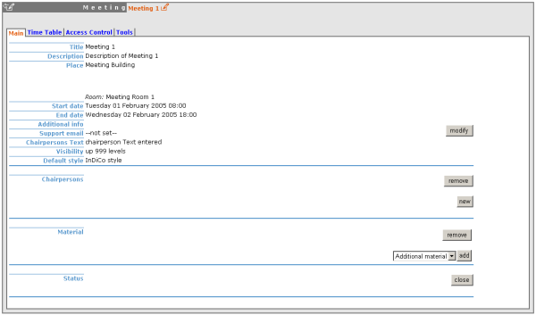
You can also add / remove any chairpersons, add / remove material and close the Meeting, if you close the meeting it can no longer be accessed.
This option allows you to choose up to which level your meeting will be visible in the overview pages.
The timetable management allows you to organise your meeting by using sessions, slots, adding contributions and including breaks. When you first start to organise your meeting the timetable will look like this:

You can modify the times in which the timetable will run between, this can either be the same as the meeting or your own custom times:
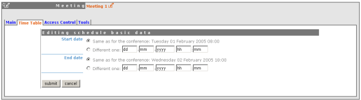
You can add a break to your timetable using the 'new break' option you will be presented with a form to fill in with the details of the break you want to add.
You can directly add Contributions into your timetable using the 'new contribution' option at the top of each day; this will take you to a form to create a new contribution.
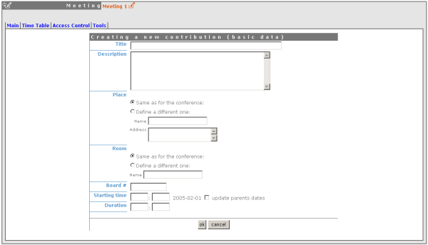
Within this form, you can define the name, description, location, a board number and the starting time with the duration in which you want this contribution to take place. If the contribution you want to add is going to be outside the timetable times, you can tick the 'update parents dates' and this will change the timetable times accordingly.
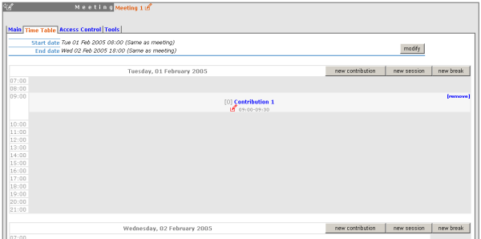
If you want to change the location or time of the contribution you can use the modification icon on the left of the contribution, or you can click on the contribution name to go to the full modification area of Contributions (See Contribution Management). You can also remove the contribution from the timetable using the 'remove' option on the right of the contribution name.
To add a session to your timetable you can use the 'new session' option, this will present you with a form to fill in the details of your session:
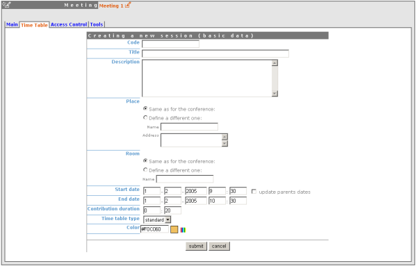
As with the contributions you can choose to update the timetable dates if your session needs to be earlier /later than the timetable is currently, using 'update parents dates'.

Once your session is added to the timetable you can use the modification icon to the left to quickly edit the basic details within the timetable or you can click on the session name and enter the main Session modification area (See Session Management). You can also move or delete the session using the links on the top right of the session block.
From within session management you can organise each session. You can enter the session modification from the session name inside the Timetable tab within the meeting management area. You are able to add/edit/remove slots, add/remove contributions and add/remove breaks into the session from here. Slots inside a session are optional, they can be used when the session takes place over more than one period of time. When you create a session it is already made with one slot.
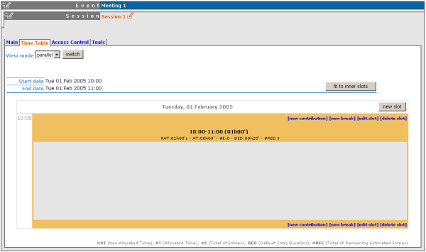
The Session management shows the times of the whole session at the top. If you have slot(s) which take up less time as in the picture above, (the session time runs until 12:00 but the slot finishes at 10:00) you can use the 'fit to inner slots' to make the session time start and finish at the same time as the first and last slot.
To add a slot to a session use the 'add slot' option, this will take you to a form to fill in with the slots details:
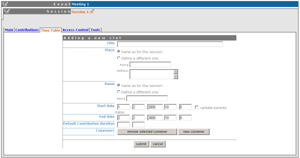
You can choose to update the sessions using 'update parent's dates' if the slot you are adding is going to be outside the session times.

To add a contribution to the session use the 'new contribution' option, this will take you to a form to create the contribution, The form shows the name and time of the session or slot you are adding the contribution to, and you can use the 'update parent's dates' if you need to change the times of the session / slot to accommodate your contribution.
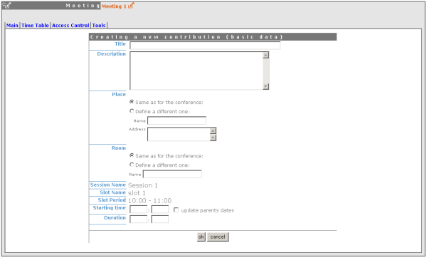
When the contribution is added to the session or slot you can change the simple details i.e. time, location by using the modification icon to the left, or you can click on the contribution name to go into the main contribution management (See Contribution Managment).
If you want to edit the slot details, i.e. change the time of the slot you can use the 'edit slot' option this will take you the slot modification screen:

As before you can update the session times if the slot will be outside the sessions original times, you also have the option to 'move entries inside slot' this means if for example you choose to make the slot an hour earlier, you can either leave the contributions / breaks as they are or you can tick the box and move all the entries an hour earlier too.
You can access the contribution management area by clicking on a contribution name from the timetable, the following sections explain the management area of each contribution.

From the main tab you can modify the main details of the contribution - title, description, location etc. You can also change the session it is included in, add / remove presenters or add / remove material (See Material in Contributions).
From the sub Contribution Tab you can add/remove sub contributions:

Clicking on a sub contribution name will take you to the modification area for the sub contribution (See Sub Contributions). You can also change the order of the sub contributions using the drop down priority list.
From access control you can add/remove users that are allowed to access, modify or submit into your contributions you can also choose to make your contribution private.
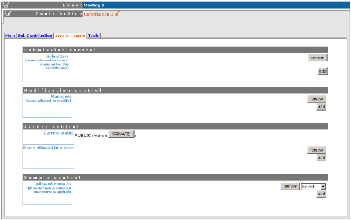
Submission Control List the users or groups that can submit material into the contributions (See Material).
Modification Control List the users or groups that can Modify the contributions
Access Control Make the contribution Public or Private, If Public: Any user can view the contributions. If Private: Only users listed in the access / modification / submission control can access the contribution.
Domain Control List the domains that can access the contribution (only available if contribution is public)
From the tools tab you have the option to delete, move or write minutes for the contribution.

Sub Contributions can be added to contributions to organise the contribution further, they can be access from the 'sub contributions tab in each contribution (See sub contribution Tab).

From inside each sub contribution you can modify the general details, add or remove presenters and attach material the same as you can for contributions. From the Tools tab in a sub contribution you can delete that sub contribution or write the minutes for it, these will be attached to the material for the sub contribution.
You can add a variety of different materials to contributions, by choosing the type you want and clicking on add, however you can only add one of each type of material but within these types you can add files or links.

You can then enter the name and Description of the material. Once added you have the options to add links or files to your material, one of these files/links can be classed as the main resource. You also have an access control tab within the material for you to control who has access to view the material.
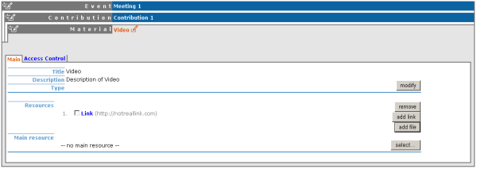
Access Control in a meeting is the same as that in a Conference. There is Modification control, Domain Control and Access Control. When adding to the Access and Modification lists, you can also add Groups of users if any have been defined by Administration.
Modification Control Only the managers listed in the modification control, the creator of the meeting and any administrators can access the Management Area of the meeting. However you can add a Modification Key which means anyone with this key can modify the meeting without logging in.
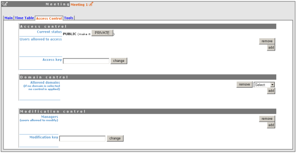
Access Control When the meeting is public - Anyone can view the meeting including the programme, timetable, abstracts etc. When the meeting is private - Only those in the access list, meeting managers and administrators can view the meeting.

When private you can also add an Access Key which means anyone with this key can access the meeting without logging in.
Domain Control This is not available when the meeting is private, but when it is available it allows you to specify which IP addresses can access the meeting.
Material Visibility By default a material will always be visible in the timetable, even if it is private (the user will then be redirected to a login screen or access key prompt when clicking on it). You can force the material to be hidden for non-authorized people by using the "Visibility to unauthorized users" section in the material access control page.
The meeting Tools allow you to make certain actions on the whole of the meeting.
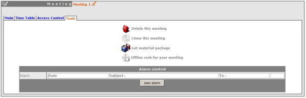
The delete meeting option will delete the whole meeting. You will be asked to confirm deletion first.
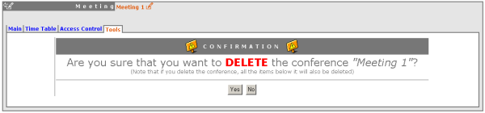
Clone the meeting if you would like to make another meeting the same, you have the option to clone it just once, at fixed intervals or on certain dates.

Using the 'Get material package' option you can create a package of all the materials that have been used in the meeting.

Using the 'Offline web for your meeting' option you can create a copy of your meeting that can be used offline for example if you wish to store your meeting to a dvd.

You can set an an alarm / reminder to alert people about the meeting, the alert will be in the form of an email.

This Meeting Management Area explained can only be accessed by Administrators or Meeting Managers.